관리자 콘솔 화면별 사용법
실제 운영 중인 콘솔 화면을 그대로 캡처해 각 화면의 위치와 버튼을 짚어 드립니다. 개념 설명은 2~5장을, 화면 위치는 이 장을 보세요.
아래 화면은 시스템 관리자 계정으로 캡처한 것입니다. 서비스 담당자는 좌측 메뉴 중 서비스·계정·전체 설정·감사 로그가 보이지 않고, 본인 담당 서비스 데이터만 표시됩니다. 캡처 속 이메일·금액은 테스트(시드) 데이터입니다.
5.1로그인과 대시보드
브라우저에서 콘솔 주소(예: http://localhost:8000/admin)로 접속하면 로그인 화면이 뜹니다. 이메일과 비밀번호로 로그인하면
가장 먼저 대시보드가 표시됩니다. 이번 달 매출·신규 구독·결제 실패·환불 지표와 최근 이벤트, 추세 차트를 한눈에 봅니다.
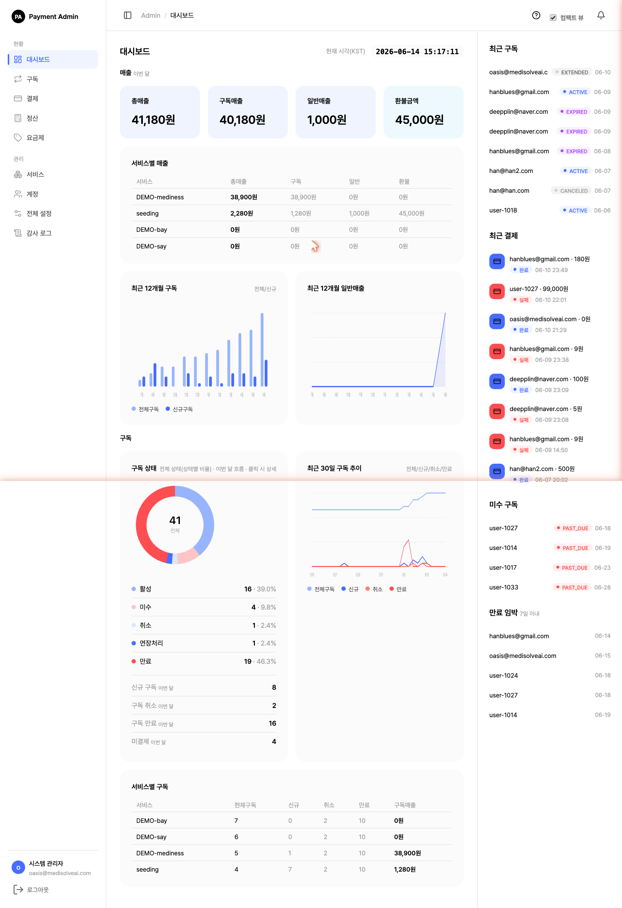
- 1매출 카드 — 이번 달 총매출·구독매출·일반매출·환불금액
- 2서비스별 매출 — 서비스(상점)별 이번 달 매출·환불 비교(시스템 관리자 전용)
- 3추세 차트 — 최근 12개월 구독/일반매출, 구독 상태 비율, 최근 30일 추이
- 4우측 레일 — 최근 구독·최근 결제(완료=파랑, 실패=빨강)·미수·만료 임박. 항목 클릭 시 상세로 이동
5.2서비스 등록·관리
좌측 서비스 메뉴입니다. 등록된 서비스(상점) 목록과 각 서비스의 담당자·허용 IP·상태를 봅니다. + 서비스 등록으로 새 서비스를 추가합니다. 시스템 관리자 전용 메뉴입니다.
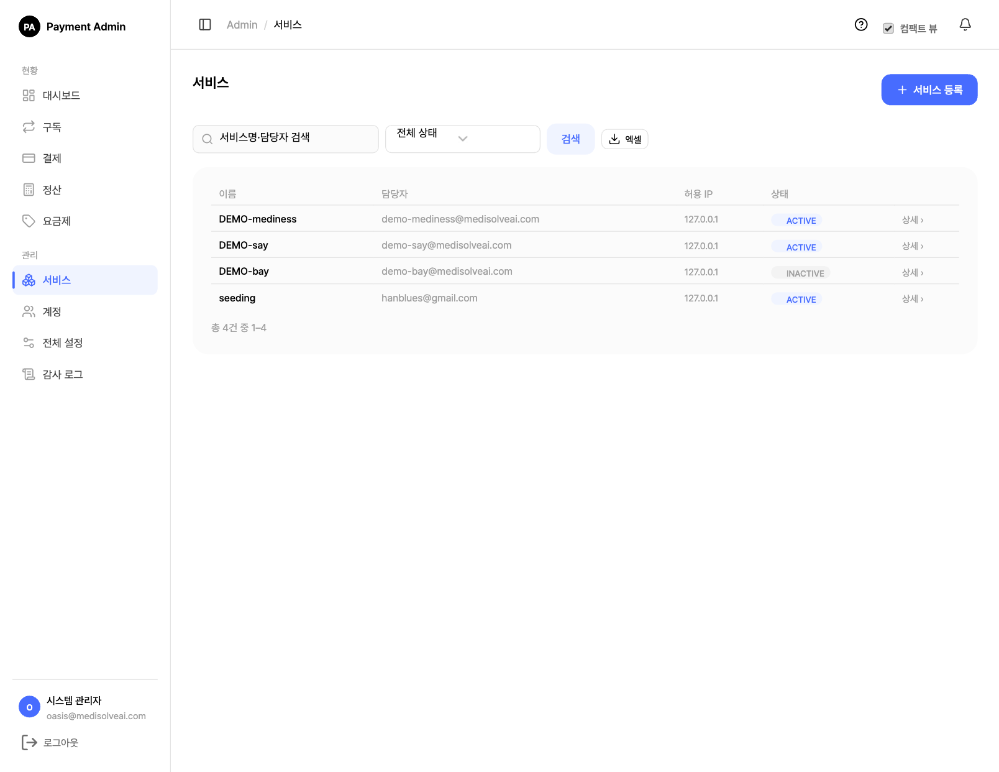
서비스 = 이 결제 인프라를 사용할 사내 앱/상점 하나입니다. 서비스를 등록하면 그 서비스 전용 API 키·HMAC 시크릿이 발급되고, 담당자·허용 IP·취소 정책이 함께 관리됩니다.
5.2.1 새 서비스 등록
+ 서비스 등록 버튼을 누르면 아래 등록 폼이 열립니다. 각 항목을 입력하고 등록을 누르면 곧바로 키 발급 화면으로 이동합니다.
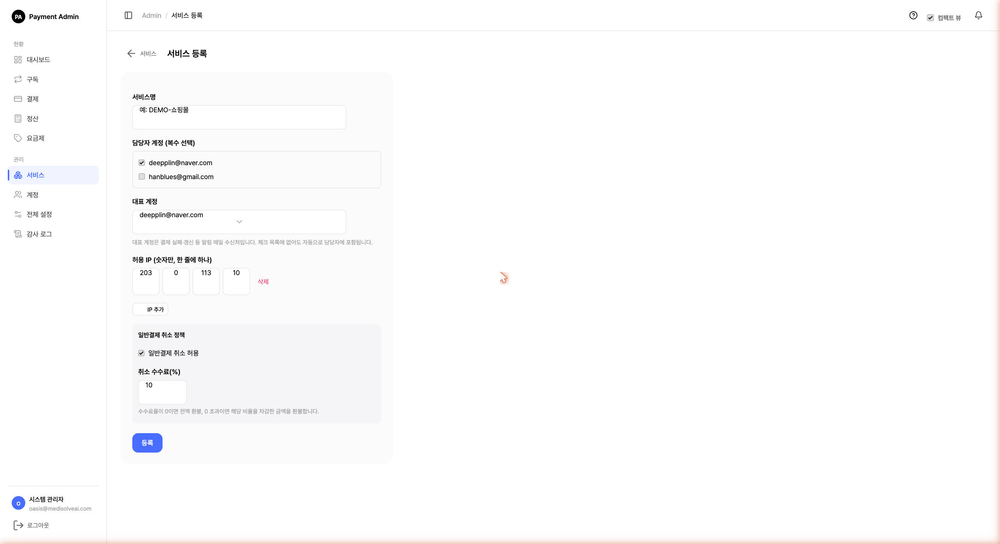
| 입력 항목 | 설명 | 필수 |
|---|---|---|
| 서비스명 | 콘솔과 결제창에 표시될 서비스 이름. 중복 불가. 예: DEMO-쇼핑몰 | 필수 |
| 담당자 계정 (복수 선택) | 이 서비스를 관리할 담당자를 체크로 선택합니다. 미리 만들어 둔 계정만 목록에 나타납니다(계정이 없으면 먼저 계정 추가). | 선택 |
| 대표 계정 | 결제 실패·갱신 등 알림 메일이 발송되는 주 수신처. 체크 목록에 없어도 자동으로 담당자에 포함됩니다. 실시간 확인 가능한 담당자를 지정하세요. | 필수 |
| 허용 IP | 이 서비스의 API를 호출할 서버의 공인 IP(옥텟 4칸·숫자만). IP 추가로 여러 개 등록. 운영/개발 서버 IP를 각각 등록하세요. | 1개 이상 |
| 일반결제 취소 허용 | 단건(일반) 결제의 환불을 허용할지 여부(체크박스). 끄면 콘솔·API에서 환불할 수 없습니다. | 선택 |
| 취소 수수료(%) | 환불 시 차감할 수수료율. 0이면 전액 환불, 0 초과면 그 비율을 뗀 금액을 환불(예: 10% → 1만 원 중 9천 원 환불). | 선택 |
담당자 계정을 먼저 만들어야 합니다. 등록 폼은 담당자를 선택하는 방식이라, 계정이 하나도 없으면 "먼저 담당자 계정을 만든 뒤 등록하세요"가 표시됩니다. 순서: ① 계정 생성 → ② 서비스 등록.
5.2.2 API 키·HMAC 시크릿 발급
등록을 마치면 발급된 키 화면이 나타납니다. 이후 서비스 상세의 키 복사 버튼으로도 다시 볼 수 있습니다(아래는 키 복사 화면).
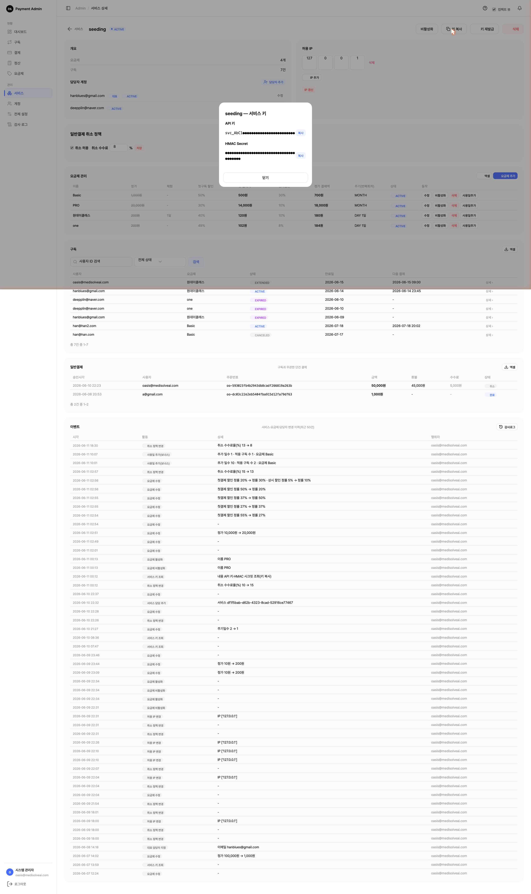
svc_…) · HMAC Secret · 각 항목 복사 버튼 (※ 보안을 위해 값은 가림 처리)| 키 | 용도 |
|---|---|
API 키 (svc_…) | 외부 서비스가 호출 시 본인을 증명하는 아이디. x-service-key 헤더에 사용. |
| HMAC Secret | 요청 위변조를 막는 서명용 비밀키. x-signature 계산에 사용. 절대 외부 노출 금지. |
API 키·HMAC 시크릿은 발급(또는 재발급) 순간 한 번만 전체가 보입니다. 즉시 복사해 안전한 채널로 담당자에게 전달하세요(메신저·이메일 평문 전송 지양).
분실·유출 시 서비스 상세의 키 재발급(회전)으로 새로 발급합니다. 재발급 즉시 기존 키는 무효화되므로 연동 서비스도 새 키로 갱신해야 합니다.
5.2.3 서비스 상세에서 수정·관리
서비스명을 클릭하면 상세 화면이 열립니다. 여기서 키, 허용 IP, 취소 정책, 담당자, 요금제를 모두 수정·관리합니다.
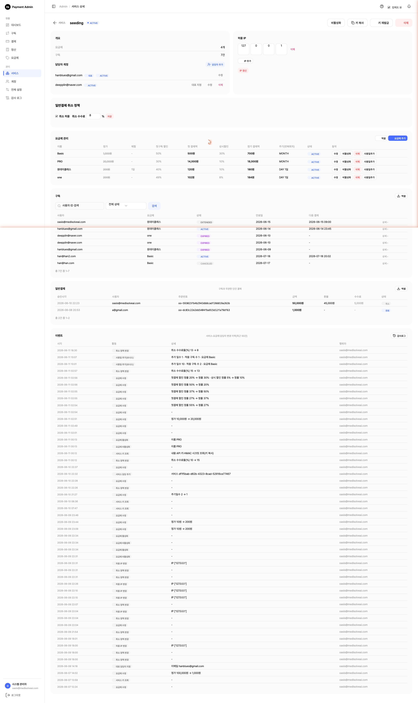
- 1상단 동작 — 비활성화(서비스 일시 중지, API 인증 차단) · 키 복사 · 키 재발급 · 삭제. (구독이 있는 서비스는 삭제 불가)
- 2허용 IP — 옥텟 4칸으로 추가/삭제 후 IP 갱신으로 저장. 등록되지 않은 IP의 API 호출은 차단(403)됩니다.
- 3담당자 계정 — 담당자 추가로 지정, 행에서 대표 지정/수정/삭제. 대표 배지가 알림 수신처입니다.
- 4일반결제 취소 정책 — 취소 허용 체크 + 취소 수수료율(%) 입력 후 저장.
- 5요금제 관리 — 이 서비스의 요금제 목록과 동작(수정·비활성화·삭제·사용일추가) 및 요금제 추가. (구독이 있는 요금제는 삭제 대신 비활성화) 보관(비활성)된 요금제 행에는 활성화 버튼이 나타나 다시 ACTIVE로 되돌릴 수 있습니다.
비활성화 vs 삭제 — 비활성화는 API 인증만 막고 데이터는 보존(다시 활성화 가능), 삭제는 영구 제거입니다. 구독이 남아 있는 서비스·요금제는 삭제할 수 없습니다.
5.2.4 요금제 "사용일추가" — 구독자 일괄 보너스
요금제 관리 테이블의 각 행에 있는 사용일추가 버튼은, 그 요금제를 이용 중인 모든 구독에 한꺼번에 무료 이용일을 더해 주는 보너스 기능입니다. 서비스 장애 보상이나 이벤트처럼 해당 요금제 구독자 전체에게 며칠을 더 주고 싶을 때 사용합니다. 버튼을 누르면 추가할 일수를 입력하는 창이 뜹니다.
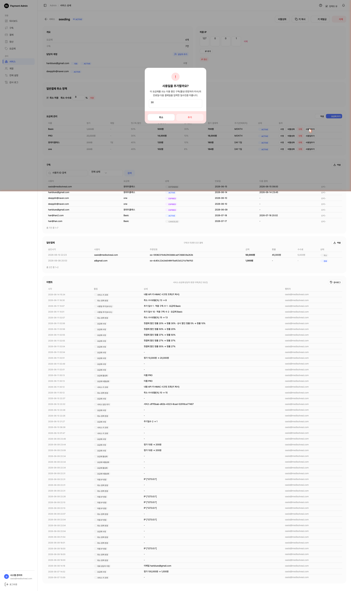
"이 요금제 쓰는 분들 전부 30일씩 더 드리기" 버튼이라고 생각하면 됩니다. 한 명씩 일일이 늘려줄 필요 없이, 해당 요금제의 이용 중인 구독 전체의 만료일이 한 번에 미뤄집니다.
| 구분 | 내용 |
|---|---|
| 적용 대상 | 그 요금제의 이용 중인 구독 — 활성(ACTIVE) · 연장처리(EXTENDED) · 미수(PAST_DUE) |
| 제외 대상 | 체험(TRIAL) · 정지(SUSPENDED) · 취소예약(CANCELED) · 만료(EXPIRED) 구독은 적용되지 않음 |
| 바뀌는 값 | 만료일과 다음 결제일이 함께 입력한 일수만큼 미뤄짐 (보너스 기간 중 결제가 앞당겨지지 않도록) |
| 상태 변화 | 없음 — 날짜만 연장되고 구독 상태는 그대로 유지(예: 활성은 활성 그대로) |
| 입력 범위 | 1 ~ 3,650일 |
| 완료 안내 | "N개 구독에 M일이 추가되었습니다" 메시지 표시. 감사 로그에도 기록됨 |
| 권한 | 시스템 관리자 · 서비스 담당자 모두 사용 가능 |
한 명만 연장하려면 이 버튼이 아니라 구독 상세의 만료일 연장(5.4)을 사용하세요. 요금제 사용일추가는 그 요금제 구독자 전원에게 적용되므로, 누르기 전에 대상 범위를 꼭 확인하세요.
5.3요금제 관리
좌측 요금제 메뉴는 전체 요금제를 한 표에서 보여줍니다. 정가·체험·첫구독 할인·첫 결제액·상시할인·정기 결제액·주기·상태를 비교할 수 있습니다.
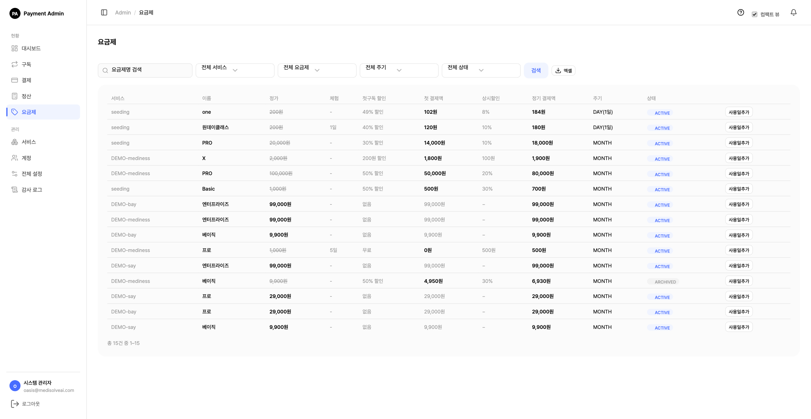
요금제 생성·수정은 서비스 담당자 권한으로, 서비스 상세의 요금제 추가 또는 요금제 메뉴에서 진행합니다. 입력 폼은 다음과 같습니다.
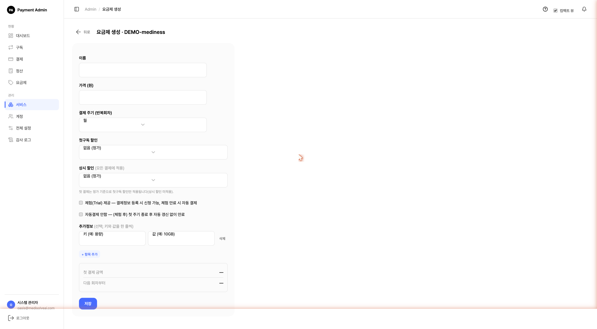
- 1결제 주기(반복회차) — 년/월/주/일. 일 선택 시 원하는 일수를 입력. 생성 후 변경 불가.
- 2첫구독 할인 — 없음/무료/할인금액/할인율. 처음 신청 시 1회만 적용.
- 3상시 할인 — 모든 회차 결제에 적용.
- 4체험(Trial) 제공 / 자동결제 안함 — 체험 일수 동안 무료 후 자동결제, 또는 첫 주기 후 자동 종료.
- 5금액 미리보기 — 저장 전 첫 결제액·정기 결제액을 자동 계산해 보여줌.
요금제 설정 항목의 의미는 1. 요금제 관리에서 더 자세히 설명합니다.
5.4구독 관리
좌측 구독 메뉴입니다. 사용자별 구독을 상태·서비스·요금제로 필터링하고, 만료일·다음 결제 시각을 확인합니다.
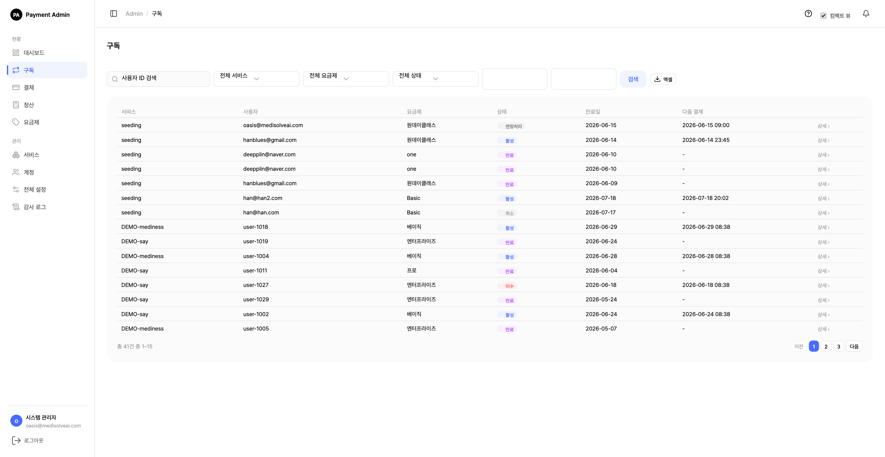
행의 상세를 클릭하면 구독 상세가 열립니다. 운영 개입(즉시 재결제·만료일 연장·강제 취소)과 결제 이력을 한 화면에서 처리합니다.
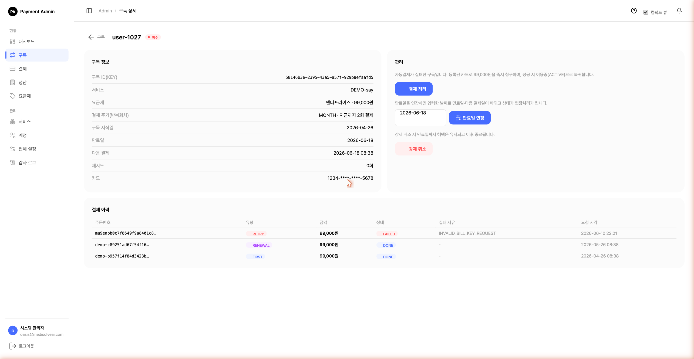
- 1구독 정보 — 구독 ID(KEY), 요금제, 결제 주기·누적 결제 횟수, 만료일, 다음 결제, 재시도 횟수, 마스킹된 카드.
- 2결제 처리 — 미수/정지 구독을 지금 즉시 결제. 성공 시 활성으로 복구.
- 3만료일 연장 — 날짜를 골라 만료일을 늦춤(연장 기간엔 자동결제 없음, 상태=연장처리).
- 4강제 취소 — 즉시 종료(환불은 포함하지 않음).
- 5결제 이력 — 유형(FIRST/RENEWAL/RETRY), 금액, 상태(DONE/FAILED), 실패 사유 코드.
5.5결제·환불
좌측 결제 메뉴는 모든 거래(구독 정기결제+단건)를 보여줍니다. 주문번호·종류·유형·금액·상태·실패 코드로 추적합니다.
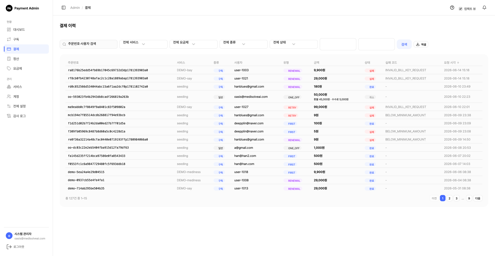
결제 행을 클릭하면 상세가 열립니다. 토스 결제키, 승인 시각, 원본 응답(Raw)과 함께 단건 결제의 경우 취소(환불)를 처리할 수 있습니다.
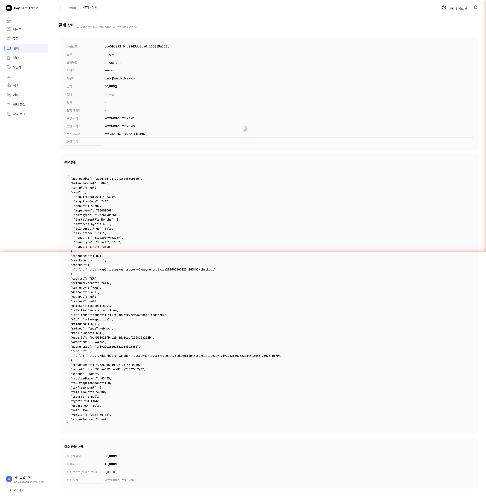
- 1상태 — 완료(DONE)·실패(FAILED)·취소(CANCELED). 취소 건은 환불액·수수료가 함께 기록됩니다.
- 2토스 결제키 — 토스 관리자 페이지에서 같은 거래를 찾을 때 사용.
- 3원본 응답 — PG가 보낸 데이터 전체(평상시 무시, 장애 분석 시 참고).
환불은 서비스 취소 정책(취소 허용·수수료율)에 따릅니다. 이미 취소된 건은 되돌릴 수 없습니다. 자세한 절차는 3. 결제·환불 참고.
5.6정산
좌측 정산 메뉴에서 월/기간을 골라 순매출을 집계합니다. 순매출 = 총 결제액 − 환불액이 정산 기준이며, 엑셀로 내려받을 수 있습니다.
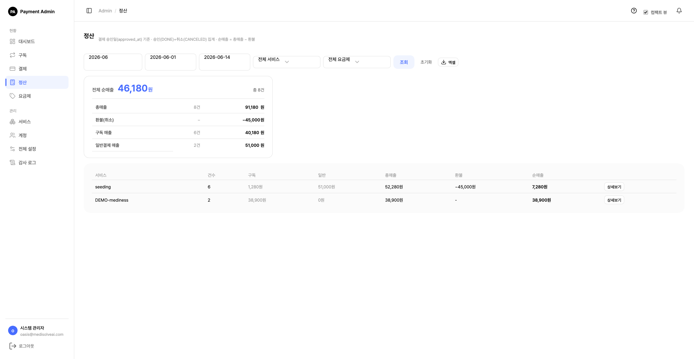
- 1기간 선택 — 월 단위 또는 시작·종료일 직접 지정 후 조회.
- 2요약 — 전체 순매출, 총매출, 환불(취소), 구독/일반 매출 분해.
- 3서비스별 표 · 상세보기 — 서비스별 정산 + 개별 결제 내역.
- 4엑셀 — 재무·세무용 상세 데이터 다운로드.
5.7계정 · 전체 설정 · 감사 로그 시스템 관리자
아래 세 메뉴는 시스템 관리자 전용입니다.
계정 (Users)
콘솔에 접속하는 운영자 계정을 관리합니다. 계정 추가로 담당자를 만들면 비밀번호 설정 링크가 이메일로 발송됩니다.
계정 생성 폼에서 '계정 생성 + 설정 메일 발송' 버튼을 누르면, 메일 발송이 끝날 때까지 버튼이 '설정 메일 발송 중…' 로딩 상태로 바뀌고 화면 상단에 진행 표시줄이 나타납니다. 발송이 완료되면 자동으로 다음 화면으로 넘어가며, 그 사이 버튼이 비활성화되어 중복 발송을 막습니다.
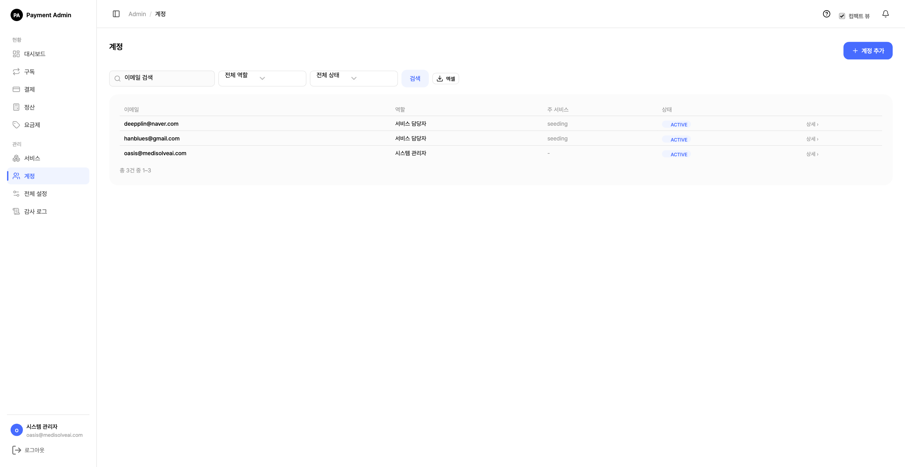
전체 설정 (System Settings)
시스템 전역 정책입니다. 자동결제 재시도, 보안/결제 정책, 어드민 접속 허용 IP, 결제서버 킬스위치를 설정합니다. 모든 값은 저장 즉시 적용되며 재배포가 필요 없습니다(DB 전역설정).
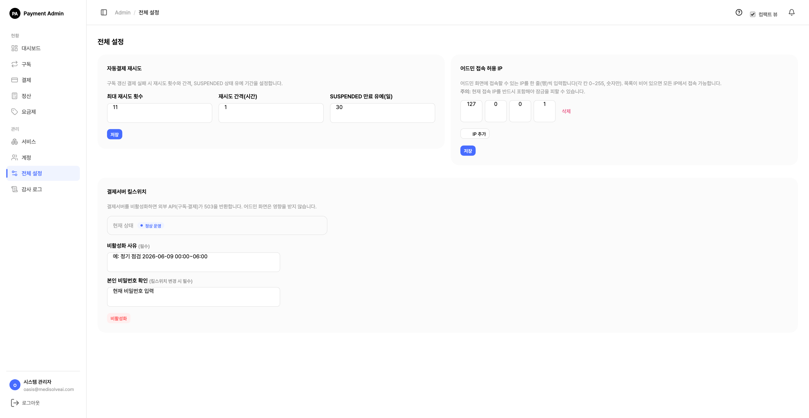
- 1자동결제 재시도 — 최대 재시도 횟수·간격(시간)·SUSPENDED 만료 유예(일).
- 2보안/결제 정책 — 로그인 실패 잠금 임계치(회)·잠금 지속(분)·단건결제 1회 최대 금액(원). 사고 대응 시 한도를 즉시 조이거나 잠금을 강화할 때 사용합니다(저장 즉시 적용).
.env의 동명 값은 부팅 기본값이며, 여기 저장한 값이 런타임에서 우선합니다. - 3어드민 접속 허용 IP — 특정 IP에서만 로그인 허용(설정 시 본인 IP 반드시 포함).
- 4킬스위치 — 긴급 시 결제 API만 일시 중단(503). 어드민 화면은 계속 동작. 변경 시 본인 비밀번호 확인 필요.
감사 로그 (Audit Log)
로그인·설정 변경·결제 등 모든 주요 이벤트를 시각·행위자·활동·대상·변경내용(diff)·IP로 기록합니다. 행위자(관리자/외부 서비스/시스템)·활동 유형으로 검색하고 엑셀로 보관할 수 있습니다.
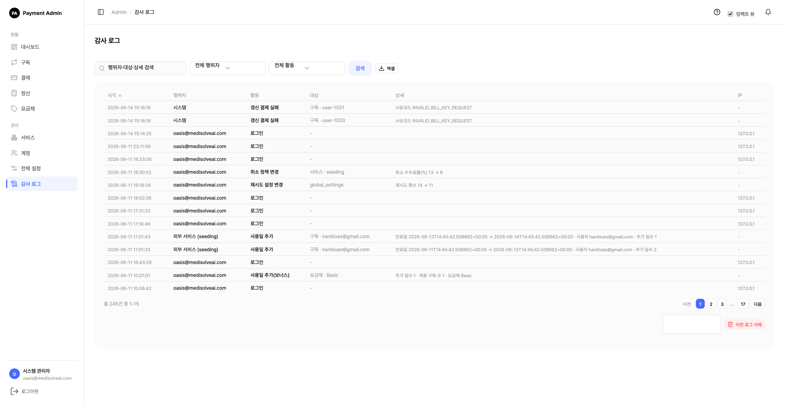
이 세 메뉴의 개념·권한 설명은 서비스 담당자 관점으로 11. FAQ과 0장에도 정리돼 있습니다.